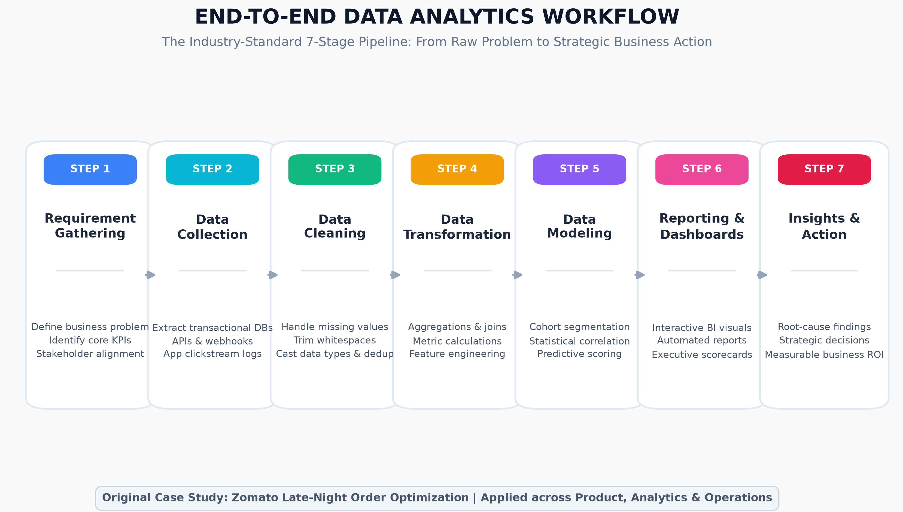
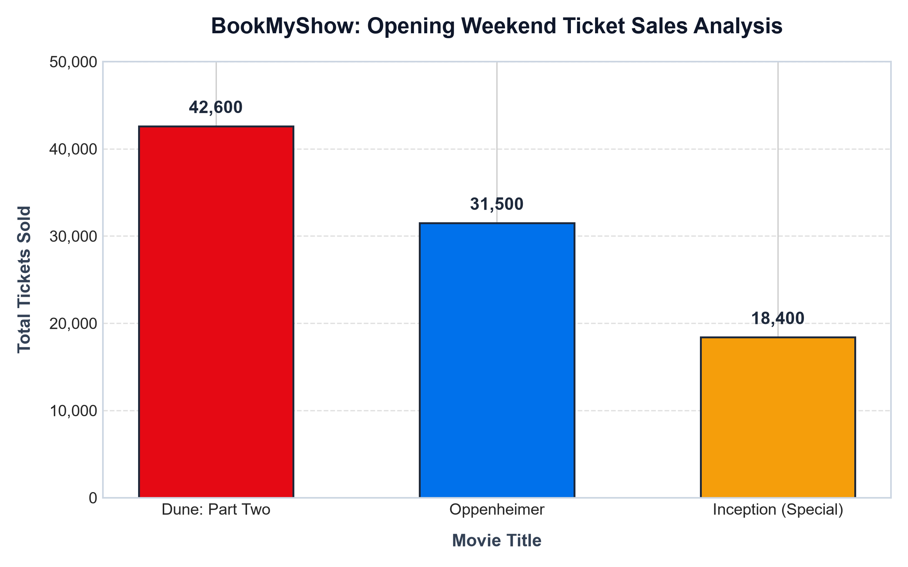

Comprehensive Documentation, Industry Pipeline Methodology & Deliverables

This case study illustrates how Zomato navigates the 7-stage workflow to resolve late-night cart abandonment and driver deficits.
| Stage | Execution & Methodology | Tools / Technologies |
|---|---|---|
| 1. Requirement Gathering | Identified a spike in cart drop-offs from 18% to 41% between 11:00 PM and 4:00 AM. Formulated the business question: "How can we recover Rs. 4.5M in lost weekly late-night GMV?" | Jira, PRD, Stakeholder Alignment |
| 2. Data Collection | Queried 1.2M checkout session logs from AWS Athena, order tables from PostgreSQL, and rider location GPS streams via Kafka. | Kafka, AWS Athena, SQL (PostgreSQL) |
| 3. Data Cleaning | Handled missing ETA estimates, stripped invalid currency symbols, removed duplicate retry pings within a 2-second debounce window. | Python (Pandas), SQL (Regex) |
| 4. Data Transformation | Calculated rider-to-order availability ratios per postal PIN code and aggregated cart values into 15-minute intervals. | SQL Window Functions, Python |
| 5. Data Modeling | Trained a logistic regression model showing that surge delivery fees > Rs. 65 and ETAs > 48 minutes increased drop-off likelihood by 3.8x. | Scikit-learn, Feature Store |
| 6. Reporting | Constructed live operational heatmaps in Power BI monitoring unassigned orders and surge multipliers across urban clusters. | Power BI, Tableau |
| 7. Insights & Action | Action: Introduced a Rs. 30 night-shift partner incentive and capped consumer surge fees at Rs. 40. Recovered 29% of abandoned carts within 3 weeks. | Executive Deck, A/B Testing |
In high-density metro areas like Ahmedabad (Prahladnagar, Satellite, Bodakdev), dining trends dramatically diverge between weekday corporate orders and weekend late-night social gatherings. Cloud kitchens frequently face high food spoilage on weekdays and sudden stock-outs on weekends, while delivery fleets experience severe regional shortages.
| # | Raw Field | Data Type | Example | Analytical Purpose |
|---|---|---|---|---|
| 1 | user_id / Demographic |
UUID / String | usr_98a71b2 |
Tracks user cohorts, tier (Free vs. Premium), and geography. |
| 2 | track_id & Metadata |
String / JSON | trk_Starboy_186bpm |
Identifies tempo, genre, language, and artist popularity. |
| 3 | play_timestamp_utc |
Timestamp (ISO 8601) | 2026-09-28T14:30:00Z |
Reveals hourly listening habits (commute, gym, study, sleep). |
| 4 | duration_played_ms |
Integer | 194000 ms |
Separates quick skips (< 30s) from full listens for algorithms. |
| 5 | listening_context |
String / Enum | "Today's Top Hits" |
Tracks discovery channel (radio, playlist, search, friend share). |
Raw Messy Record: product_id: 123, name: 'iPhone 14 ', price: '79999 ', category: ' Mobiles', rating: '4.5 ', stock: 'Yes'
| Field | Raw Input | Cleaned Output | Target Type | Transformation Method |
|---|---|---|---|---|
product_id |
123 |
123 |
Integer | Casting to strict primary integer |
name |
'iPhone 14 ' |
'iPhone 14' |
String | Whitespace trimming (.strip()) |
price |
'79999 ' |
79999 |
Integer | Strip and parse as int |
category |
' Mobiles' |
'mobiles' |
String | Strip and lowercase standardization |
rating |
'4.5 ' |
4.5 |
Float | Strip and parse as float |
stock |
'Yes' |
True |
Boolean | Boolean mapping ('Yes' → True) |
# Python Cleaning Script (task3_clean_product.py)
cleaned_record = {
'product_id': int(raw['product_id']),
'name': raw['name'].strip(),
'price': int(raw['price'].strip()),
'category': raw['category'].strip().lower(),
'rating': float(raw['rating'].strip()),
'stock': True if raw['stock'].strip().lower() in ['yes', 'true', '1'] else False
}Raw Input Transactions: (A, Pizza, 300), (B, Burger, 150), (A, Burger, 150)
| User ID | Total Spend | Total Orders | Items Ordered | Average Order Value (AOV) |
|---|---|---|---|---|
| User A | Rs. 450 | 2 | Pizza, Burger | Rs. 225.00 |
| User B | Rs. 150 | 1 | Burger | Rs. 150.00 |
-- SQL Query to Aggregate Customer Orders
SELECT
user_id,
COUNT(*) AS total_orders,
SUM(price) AS total_spend_inr,
GROUP_CONCAT(item SEPARATOR ', ') AS items_ordered,
ROUND(AVG(price), 2) AS avg_order_value_inr
FROM customer_orders
GROUP BY user_id;
| Movie Title | Genre | Tickets Sold | Avg Price | Total Revenue |
|---|---|---|---|---|
| Dune: Part Two | Sci-Fi / Adventure | 42,600 | Rs. 380 | Rs. 1,61,88,000 |
| Oppenheimer | Biographical Drama | 31,500 | Rs. 420 | Rs. 1,32,30,000 |
| Inception (Special) | Sci-Fi / Action | 18,400 | Rs. 350 | Rs. 64,40,000 |